Introduction
Macroecological studies have been increasingly utilized in the
context of climate change, necessitating the use of tools to analyze
large datasets. To examine and comprehend the intricate mechanisms that
underlie species distributions and the structure of biological
communities, a diverse array of metrics has been developed. These
metrics encompass alpha and beta diversity patterns across taxonomic
(TD), functional (FD), and phylogenetic (PD) dimensions. The package divraster
addresses a current gap in this field by offering functions to calculate
diversity metrics directly from rasters, eliminating the need for matrix
transformations. This capability is especially valuable when dealing
with extensive datasets, as matrices often impose memory
constraints.
Installation
If you find any bug, let us know through divraster
Issues. The development version of divraster can be
installed from the divraster repository in
Github:
Analysis
The divraster package can directly calculate temporal
beta diversity from multilayer rasters for taxonomic (TD), functional
(FD), and phylogenetic (PD) dimensions using the
temp.beta() function. To our knowledge this method has not
been previously implemented in R. Furthermore,
divraster can compute spatial alpha and beta diversity for
TD, FD, and PD by using the spat.alpha() and
spat.beta() functions. All beta diversity calculations are
partitioned into replacement and richness differences components.
Additionally, the spat.trait() function calculates
individual average traits of continuous variables, while the
spat.rand() calculates standardized effect size for FD and
PD alpha diversity.
Let’s see some examples.
Loading data
# Presence-absence SpatRaster
bin1 <- terra::rast(system.file("extdata",
"ref_frugivor.tif",
package = "divraster"))
bin2 <- terra::rast(system.file("extdata",
"fut_frugivor.tif",
package = "divraster"))
# Change extension to process faster
terra::ext(bin1)
#> SpatExtent : -41.875, -38.75, -21.375, -13 (xmin, xmax, ymin, ymax)
e <- c(-41, -39, -15, -13)
bin1 <- terra::crop(bin1, e)
bin2 <- terra::crop(bin2, e)
# Species traits
traits <- read.csv(system.file("extdata",
"traits_frugivor.csv",
package = "divraster"),
sep = ";",
row.names = 1)
# Phylogenetic tree
tree <- ape::read.tree(system.file("extdata",
"tree_frugivor.tre",
package = "divraster"))Alpha diversity
# Taxonomic
alpha.td <- divraster::spat.alpha(bin1)
#> The legacy packages maptools, rgdal, and rgeos, underpinning the sp package,
#> which was just loaded, will retire in October 2023.
#> Please refer to R-spatial evolution reports for details, especially
#> https://r-spatial.org/r/2023/05/15/evolution4.html.
#> It may be desirable to make the sf package available;
#> package maintainers should consider adding sf to Suggests:.
#> The sp package is now running under evolution status 2
#> (status 2 uses the sf package in place of rgdal)
alpha.td
#> class : SpatRaster
#> dimensions : 16, 16, 1 (nrow, ncol, nlyr)
#> resolution : 0.125, 0.125 (x, y)
#> extent : -41, -39, -15, -13 (xmin, xmax, ymin, ymax)
#> coord. ref. : lon/lat WGS 84 (EPSG:4326)
#> source(s) : memory
#> name : Alpha_TD
#> min value : 0
#> max value : 67
terra::plot(alpha.td, main = names(alpha.td))
# Functional
alpha.fd <- divraster::spat.alpha(bin1, traits)
alpha.fd
#> class : SpatRaster
#> dimensions : 16, 16, 1 (nrow, ncol, nlyr)
#> resolution : 0.125, 0.125 (x, y)
#> extent : -41, -39, -15, -13 (xmin, xmax, ymin, ymax)
#> coord. ref. : lon/lat WGS 84 (EPSG:4326)
#> source(s) : memory
#> name : Alpha_FD
#> min value : 3.723151
#> max value : 4.378846
terra::plot(alpha.fd, main = names(alpha.fd))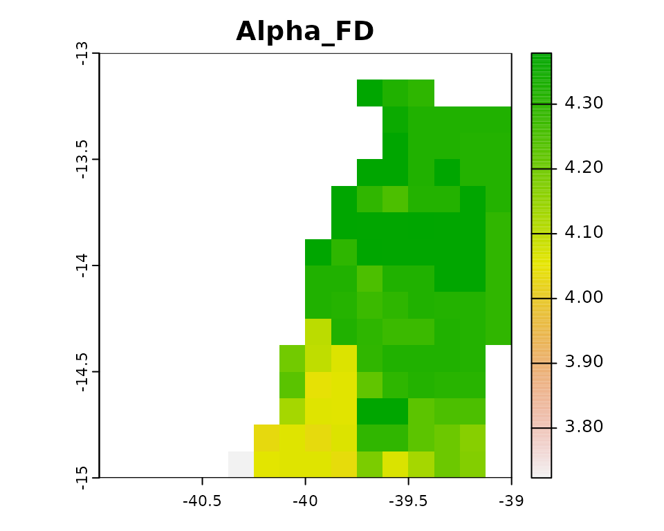
# Phylogenetic
alpha.pd <- divraster::spat.alpha(bin1, tree)
alpha.pd
#> class : SpatRaster
#> dimensions : 16, 16, 1 (nrow, ncol, nlyr)
#> resolution : 0.125, 0.125 (x, y)
#> extent : -41, -39, -15, -13 (xmin, xmax, ymin, ymax)
#> coord. ref. : lon/lat WGS 84 (EPSG:4326)
#> source(s) : memory
#> name : Alpha_PD
#> min value : 1523.921
#> max value : 1859.668
terra::plot(alpha.pd, main = names(alpha.pd))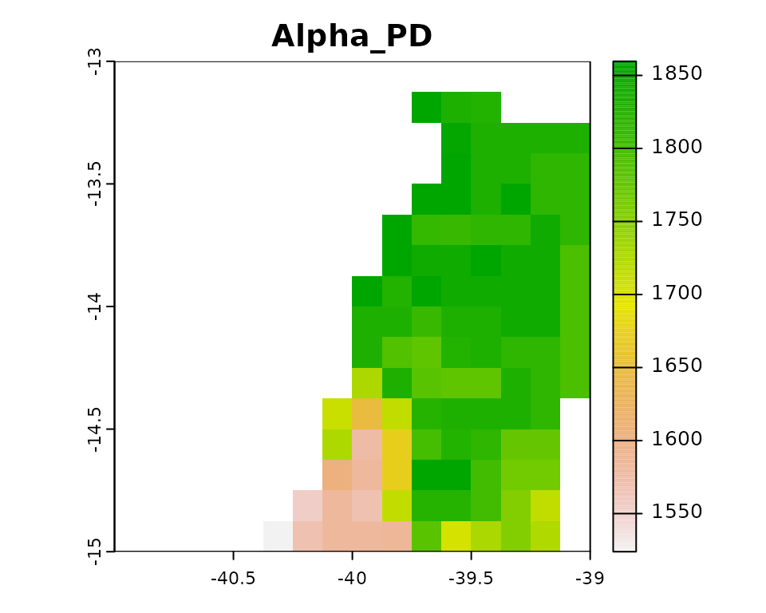
Average traits
avg.traits1 <- divraster::spat.trait(bin1, traits)
avg.traits1
#> class : SpatRaster
#> dimensions : 16, 16, 12 (nrow, ncol, nlyr)
#> resolution : 0.125, 0.125 (x, y)
#> extent : -41, -39, -15, -13 (xmin, xmax, ymin, ymax)
#> coord. ref. : lon/lat WGS 84 (EPSG:4326)
#> source(s) : memory
#> names : Beak.~ulmen, Beak.~Nares, Beak.Width, Beak.Depth, Tarsu~ength, Wing.Length, ...
#> min values : 22.12692, 14.00385, 7.046154, 8.526923, 25.15000, 117.0016, ...
#> max values : 24.52903, 16.41452, 7.804545, 9.601515, 26.29828, 122.0379, ...
terra::plot(avg.traits1, main = names(avg.traits1))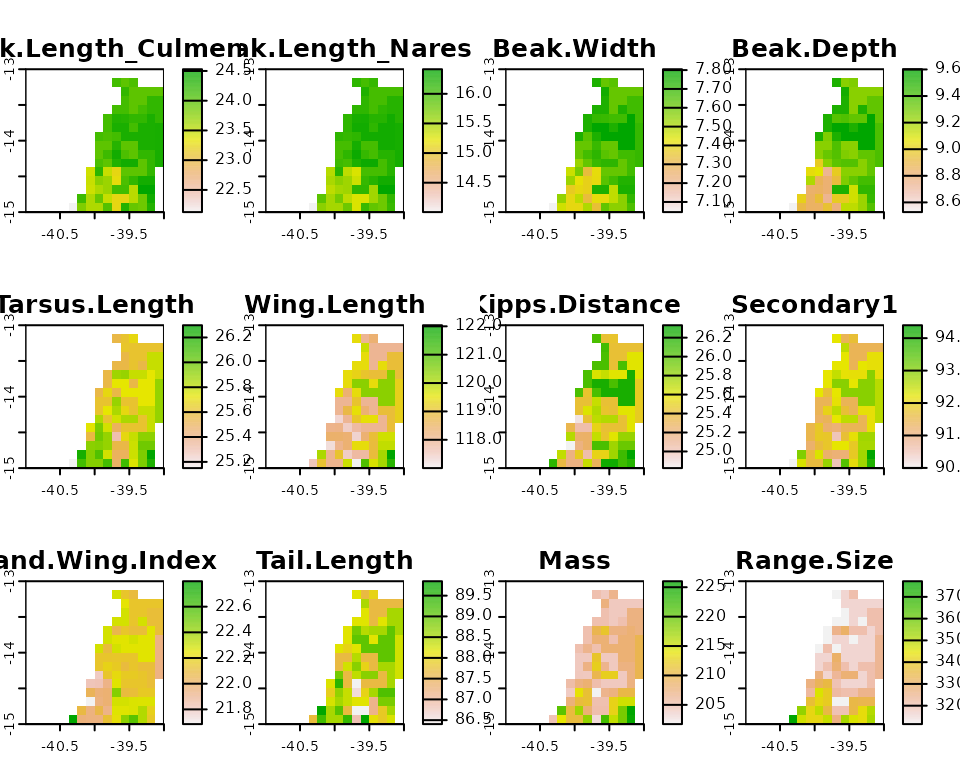
Standardize Effect Size
# Functional
ses.fd <- divraster::spat.rand(bin1, traits, 3, "site")
ses.fd
#> class : SpatRaster
#> dimensions : 16, 16, 4 (nrow, ncol, nlyr)
#> resolution : 0.125, 0.125 (x, y)
#> extent : -41, -39, -15, -13 (xmin, xmax, ymin, ymax)
#> coord. ref. : lon/lat WGS 84 (EPSG:4326)
#> source(s) : memory
#> names : Mean_FD, SD_FD, Observed_FD, SES_FD
#> min values : 3.632123, 0.00358876, 3.723151, -18.514881
#> max values : 4.433342, 0.20163324, 4.378846, 2.643176
terra::plot(ses.fd, main = names(ses.fd))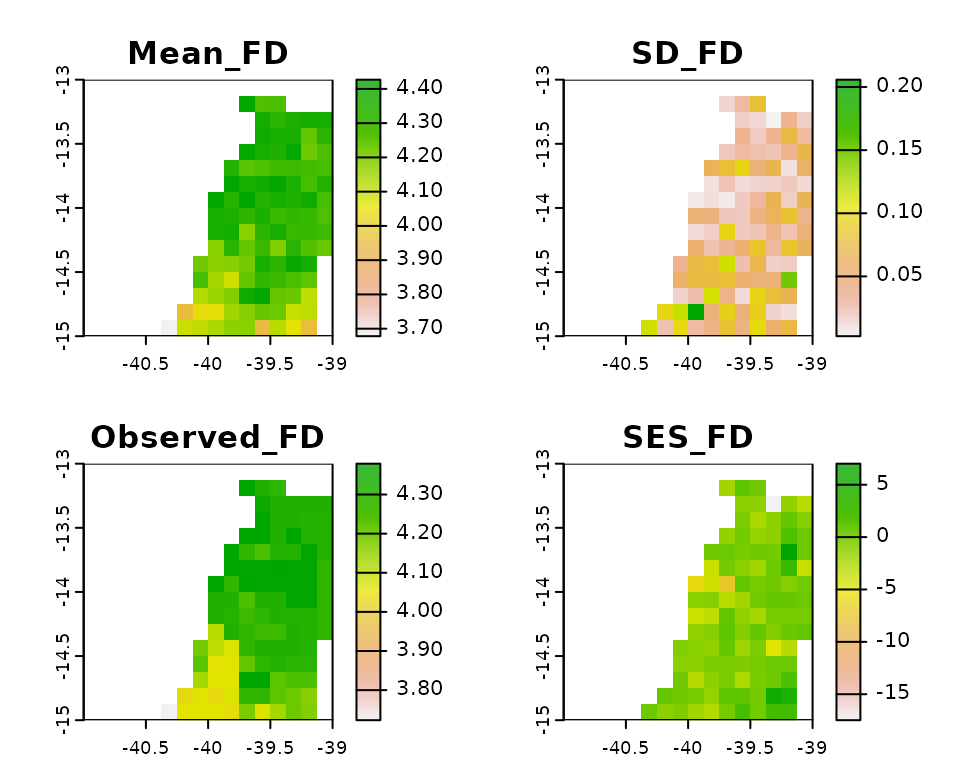
# Phylogenetic
ses.pd <- divraster::spat.rand(bin1, tree, 3, "site")
ses.pd
#> class : SpatRaster
#> dimensions : 16, 16, 4 (nrow, ncol, nlyr)
#> resolution : 0.125, 0.125 (x, y)
#> extent : -41, -39, -15, -13 (xmin, xmax, ymin, ymax)
#> coord. ref. : lon/lat WGS 84 (EPSG:4326)
#> source(s) : memory
#> names : Mean_PD, SD_PD, Observed_PD, SES_PD
#> min values : 1619.199, 0.6033336, 1623.451, -14.72788
#> max values : 1876.122, 87.5025025, 1880.676, 24.35561
terra::plot(ses.pd, main = names(ses.pd))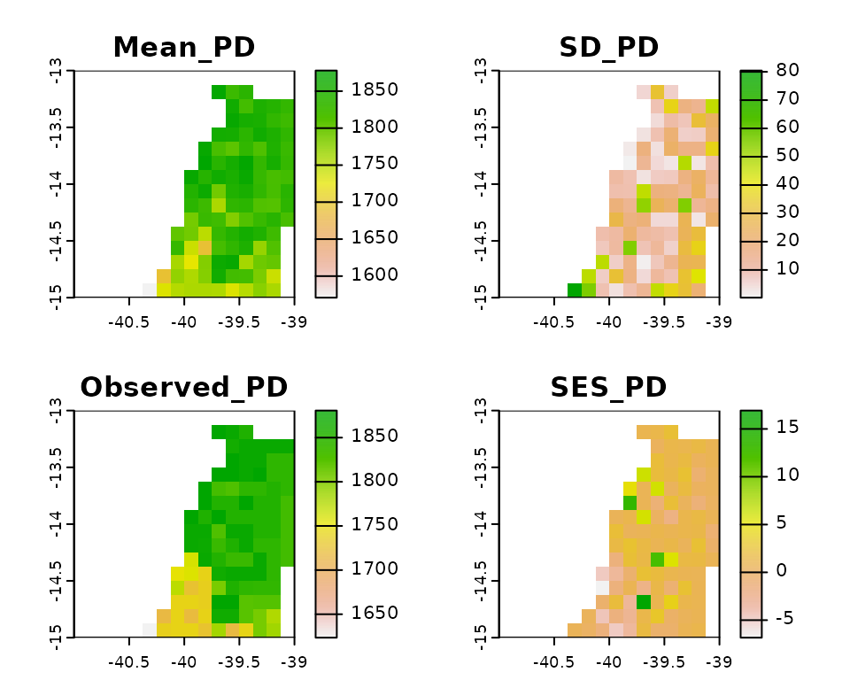
Spatial beta diversity
# Taxonomic
beta.td <- divraster::spat.beta(bin1)
beta.td
#> class : SpatRaster
#> dimensions : 16, 16, 3 (nrow, ncol, nlyr)
#> resolution : 0.125, 0.125 (x, y)
#> extent : -41, -39, -15, -13 (xmin, xmax, ymin, ymax)
#> coord. ref. : lon/lat WGS 84 (EPSG:4326)
#> source(s) : memory
#> names : Btotal_TD, Brepl_TD, Brich_TD
#> min values : 0.006060606, 0.00000000, 0.004264392
#> max values : 0.109409606, 0.03638009, 0.103181683
terra::plot(beta.td, main = names(beta.td))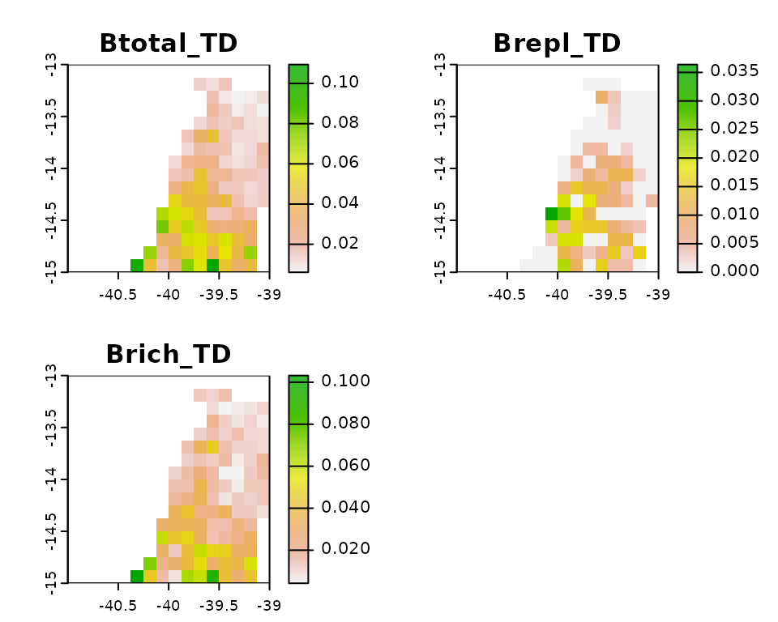
# Functional
beta.fd <- divraster::spat.beta(bin1, traits)
beta.fd
#> class : SpatRaster
#> dimensions : 16, 16, 3 (nrow, ncol, nlyr)
#> resolution : 0.125, 0.125 (x, y)
#> extent : -41, -39, -15, -13 (xmin, xmax, ymin, ymax)
#> coord. ref. : lon/lat WGS 84 (EPSG:4326)
#> source(s) : memory
#> names : Btotal_FD, Brepl_FD, Brich_FD
#> min values : 0.0004245858, 0.00000000, 0.0004245858
#> max values : 0.0793045655, 0.01846139, 0.0793045655
terra::plot(beta.fd, main = names(beta.fd))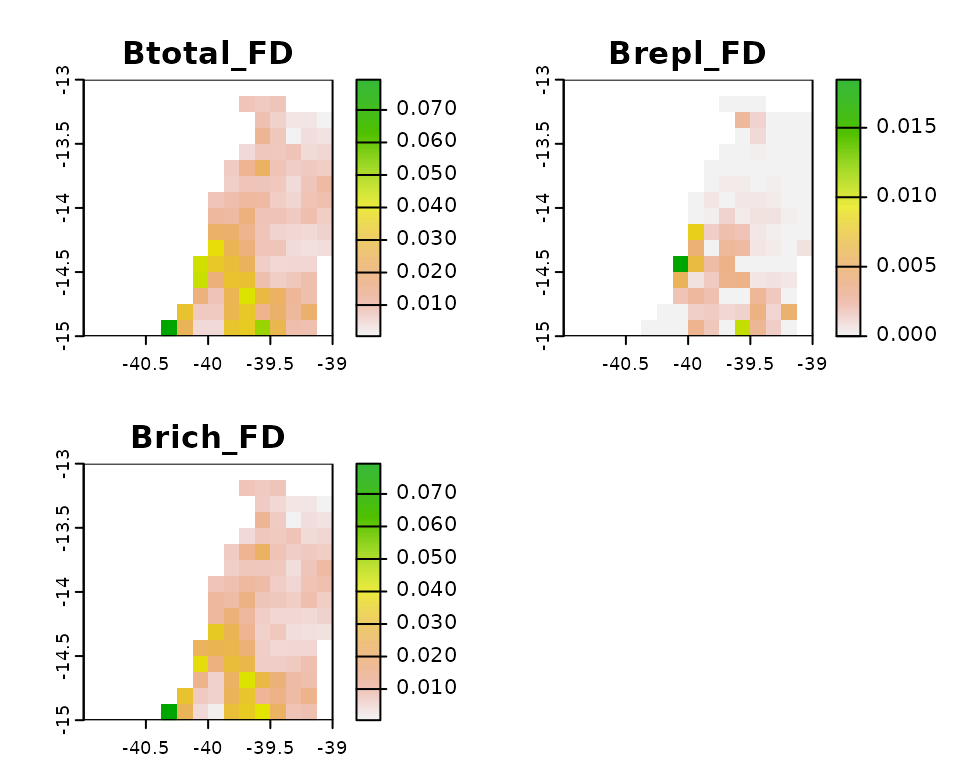
# Phylogenetic
beta.pd <- divraster::spat.beta(bin1, tree)
beta.pd
#> class : SpatRaster
#> dimensions : 16, 16, 3 (nrow, ncol, nlyr)
#> resolution : 0.125, 0.125 (x, y)
#> extent : -41, -39, -15, -13 (xmin, xmax, ymin, ymax)
#> coord. ref. : lon/lat WGS 84 (EPSG:4326)
#> source(s) : memory
#> names : Btotal_PD, Brepl_PD, Brich_PD
#> min values : 0.002851805, 0.000000000, 0.001618621
#> max values : 0.059656685, 0.008026876, 0.059656685
terra::plot(beta.pd, main = names(beta.pd))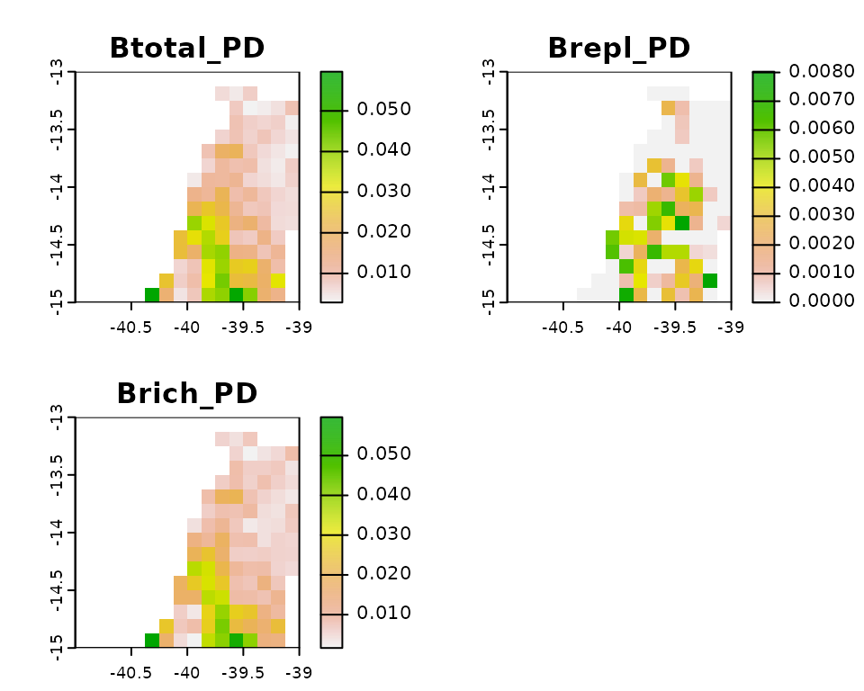
Temporal beta diversity
# Taxonomic
betatemp.td <- divraster::temp.beta(bin1, bin2)
betatemp.td
#> class : SpatRaster
#> dimensions : 16, 16, 3 (nrow, ncol, nlyr)
#> resolution : 0.125, 0.125 (x, y)
#> extent : -41, -39, -15, -13 (xmin, xmax, ymin, ymax)
#> coord. ref. : lon/lat WGS 84 (EPSG:4326)
#> source(s) : memory
#> names : Btotal_TD, Brepl_TD, Brich_TD
#> min values : 0.02985075, 0.00000000, 0.02985075
#> max values : 0.31578947, 0.09836066, 0.31578947
terra::plot(betatemp.td, main = names(betatemp.td))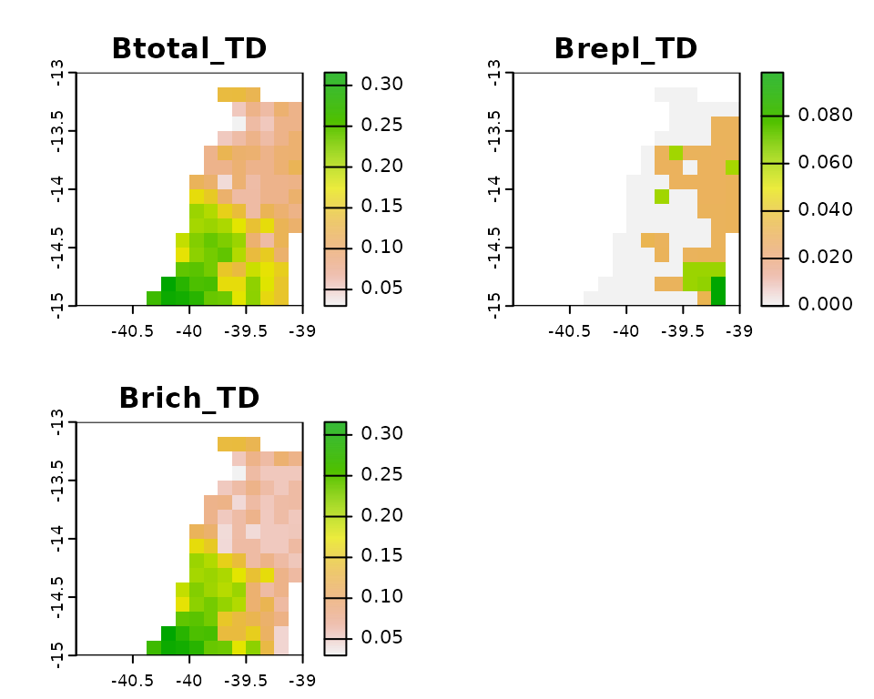
# Functional
betatemp.fd <- divraster::temp.beta(bin1, bin2, traits)
betatemp.fd
#> class : SpatRaster
#> dimensions : 16, 16, 3 (nrow, ncol, nlyr)
#> resolution : 0.125, 0.125 (x, y)
#> extent : -41, -39, -15, -13 (xmin, xmax, ymin, ymax)
#> coord. ref. : lon/lat WGS 84 (EPSG:4326)
#> source(s) : memory
#> names : Btotal_FD, Brepl_FD, Brich_FD
#> min values : 0.01733908, 0.00000000, 0.01012696
#> max values : 0.17031569, 0.03741327, 0.17031569
terra::plot(betatemp.fd, main = names(betatemp.fd))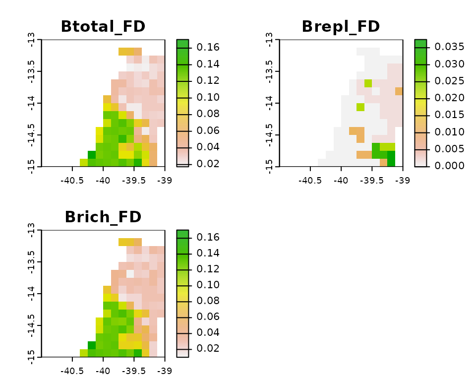
# Phylogenetic
betatemp.pd <- divraster::temp.beta(bin1, bin2, tree)
betatemp.pd
#> class : SpatRaster
#> dimensions : 16, 16, 3 (nrow, ncol, nlyr)
#> resolution : 0.125, 0.125 (x, y)
#> extent : -41, -39, -15, -13 (xmin, xmax, ymin, ymax)
#> coord. ref. : lon/lat WGS 84 (EPSG:4326)
#> source(s) : memory
#> names : Btotal_PD, Brepl_PD, Brich_PD
#> min values : 0.0120217, 0.0000000, 0.009533166
#> max values : 0.1792291, 0.0394096, 0.179229119
terra::plot(betatemp.pd, main = names(betatemp.pd))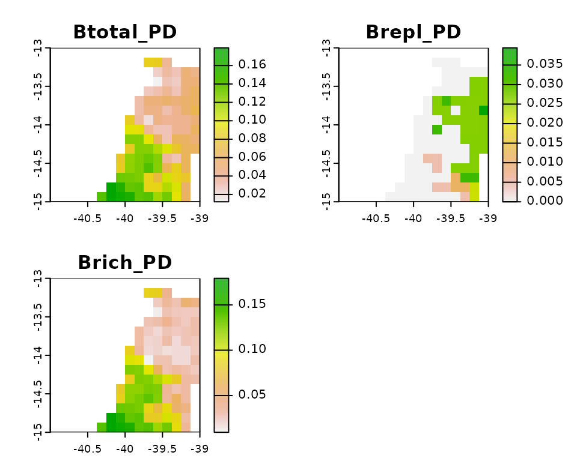